Act I: The Hook & Paradox
Why Verbalize Thoughts?
01 / 15
🎙️ 패러다임 전환을 알리는 첫 질문
"체스를 두거나 복잡한 수학 문제를 풀 때, 인간은 머릿속의 모든 연산 과정을 입 밖으로 내뱉지 않습니다."
⚠️ 기존 언어 모델의 근본적 모순
CoT, o1 스타일의 언어 모델은 생각을 하기 위해 수천 개의 무의미한 텍스트 토큰을 생성하며 어휘 사전($d \times V$)을 낭비합니다.
✨ 제안하는 패러다임: NeuroWorld-LM
단어 생성이 아닌 고차원 잠재 세계 모델(RSSM-SSM)의 침묵 속 시뮬레이션과 능동 망각을 통한 차세대 지능의 실현.
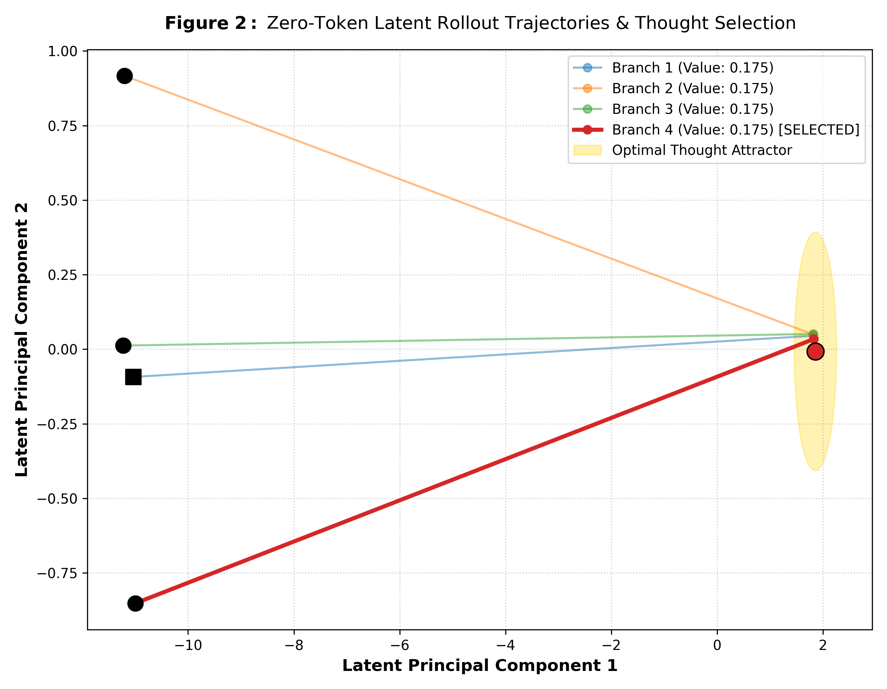
고차원 잠재 공간에서 전개되는 침묵 속 사고 궤적 (Latent Thought Trajectory)
🎯 TAKEAWAY 01
"지능의 본질은 무의미한 텍스트 토큰 생성이 아니라, 고차원 잠재 공간에서의 내부 세계 시뮬레이션과 불필요한 정보의 선별적 망각에 있습니다."
안녕하십니까, 연구자 여러분. 오늘 저는 현대 언어 모델링의 가장 뿌리 깊은 상식에 근본적인 질문을 던지고자 합니다. 바로 '왜 언어 모델은 생각하는 모든 과정을 단어로 떠들어야 하는가?'라는 질문입니다. 우리는 지난 수년간 CoT나 o1 같은 모델들이 수천 개의 '추론 토큰'을 길게 생성하며 문제를 푸는 것을 당연하게 여겨왔습니다. 하지만 인간은 체스를 둘 때 머릿속의 계산을 입으로 말하지 않고, 뇌 속 잠재 세계 모델에서 침묵 속에서 시뮬레이션한 뒤 최종 수만 둡니다. 오늘 발표할 NeuroWorld-LM은 이 인지과학적 통찰을 수식화하여 토큰 낭비 없는 잠재 공간 추론과 O(1) 상수 메모리를 달성한 연구입니다.
Act I: The Crisis
트랜스포머의 두 가지 치명적 원죄
02 / 15
💥 Sin 1: O(T) KV-Cache Memory Wall
문맥 길이 $T$에 비례하여 기하급수적으로 폭발하는 캐시 메모리. 32k~100k 토큰에서 수십 GB HBM을 잠식하여 동시 서빙 마비.
\text{Memory} = 2 \times n_{\text{layers}} \times d_{\text{model}} \times T \in \mathcal{O}(T)
🚫 Sin 2: Architectural Inability to Forget
소프트맥스는 엄격한 양수($\exp > 0$)이므로 수학적으로 가중치 0을 생성할 수 없습니다. 즉 과거 노이즈와 구버전 변수를 영원히 소거하지 못합니다.
\text{Attention} = \text{softmax}(QK^T/\sqrt{d})V \implies w_{ij} > 0
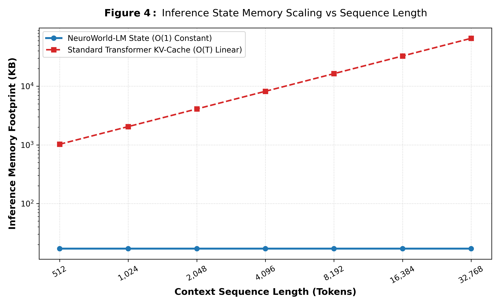
문맥 확장에 따른 트랜스포머의 KV 캐시 메모리 폭발 vs NeuroWorld-LM의 O(1) 고정 상태
🎯 TAKEAWAY 02
"트랜스포머의 소프트맥스는 수학적으로 가중치 0을 생성할 수 없습니다. 즉, 망각이 구조적으로 불가능하여 긴 문맥에서 필연적으로 붕괴합니다."
트랜스포머의 첫 번째 한계는 널리 알려진 O(T) KV 캐시 폭발입니다. 10만 토큰 환경에서 GPU VRAM을 수십 기가바이트씩 잠식해 동시 서빙이 불가능해집니다. 하지만 더 치명적인 것은 두 번째, 바로 '망각의 구조적 불가능성'입니다. 셀프 어텐션 수식을 보면 소프트맥스의 지수함수 특성상 가중치는 언제나 0보다 큽니다. 지나간 오타, 이미 닫힌 스크래치패드, 이전 대화의 비밀번호를 수학적으로 0으로 지울 방법이 태생적으로 없습니다. 이로 인해 교란 요인이 쌓여 문맥이 썩어 들어가는 Context Rot 현상이 발생합니다.
Act I: The Cognitive Blueprint
인간의 두뇌 vs 현대 LLM의 인지 구조
03 / 15
🧠 인간 두뇌 (Kahneman Dual-System)
System 1: 어휘 연상 및 즉각적 직관 생성.
System 2: 언어화되지 않은 고차원 잠재 공간에서의 멘탈 롤아웃.
Active Forgetting: 불필요한 디테일을 해마에서 적극 망각하여 작업 기억의 신호 순도를 유지.
System 2: 언어화되지 않은 고차원 잠재 공간에서의 멘탈 롤아웃.
Active Forgetting: 불필요한 디테일을 해마에서 적극 망각하여 작업 기억의 신호 순도를 유지.
🤖 현대 LLM (Transformer CoT)
단일 시스템: 오직 다음 토큰 자동 생성에만 의존.
언어화 비효율: 생각 한 단계를 밟을 때마다 $128,000$차원 단어 사전 행렬곱을 강제 수행.
기억 고착: 모든 텍스트를 영구 보존하여 노이즈 누적.
언어화 비효율: 생각 한 단계를 밟을 때마다 $128,000$차원 단어 사전 행렬곱을 강제 수행.
기억 고착: 모든 텍스트를 영구 보존하여 노이즈 누적.
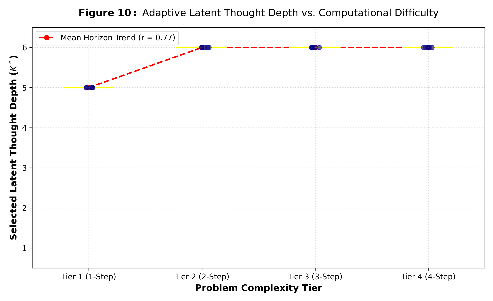
문제 난이도에 따른 인지적 사고 깊이의 가변 조절 (Adaptive Thought Depth)
🎯 TAKEAWAY 03
"진정한 숙고적 추론(System 2)은 어휘 생성 네트워크 바깥의 잠재 세계 모델(World Model)에서 수행되어야 마땅합니다."
대니얼 카너먼은 인간의 인지를 빠른 직관인 System 1과 깊은 숙고인 System 2로 구분했습니다. 인간은 어려운 문제를 마주하면 입을 다물고 뇌 속 잠재 세계 모델에서 가상의 상황을 굴려본 뒤 답을 냅니다. 반면 현재 LLM은 생각을 하기 위해 단어를 수천 개 내뱉는 기이한 방식을 씁니다. 단어 하나마다 거대한 사전을 거쳐야 하므로 비용이 막대합니다. 무엇보다 지능의 본질은 무작정 다 외우는 게 아니라 불필요한 것을 버리는 데 있습니다. 우리는 잠재 공간 시뮬레이션과 인지적 능동 망각을 결합한 새 모델을 설계했습니다.
Act II: Core Architecture
NeuroWorld-LM: 이중 상태 공간 세계 모델
04 / 15
1. 결정론적 문맥 메모리 ($h_t \in \mathbb{R}^{d_h}$)
Mamba-2 SSD 기반의 선형 시간 SSM으로 시퀀스 전체의 거시적 문맥을 압축.
h_t = \mathbf{A}_t h_{t-1} + \mathbf{B}_t x_t \quad \implies \text{Strictly } \mathcal{O}(1) \text{ Memory}
2. 확률론적 잠재 신념 상태 ($z_t \in \{1,\dots,K\}^B$)
RSSM 범주형 잠재 변수로 다중 가설을 표현하며 기존 선형 RNN의 표현력 한계를 분쇄.
z_t \sim q_\phi(z_t \mid h_t, x_t) \quad \text{vs} \quad p_\theta(z_t \mid h_t)
3. 고정 상태 메모리: 레이어당 단 17.0 KB
KV 캐시를 완전히 배제하여 16k 토큰 기준 트랜스포머 대비 1,927배 메모리 절감.
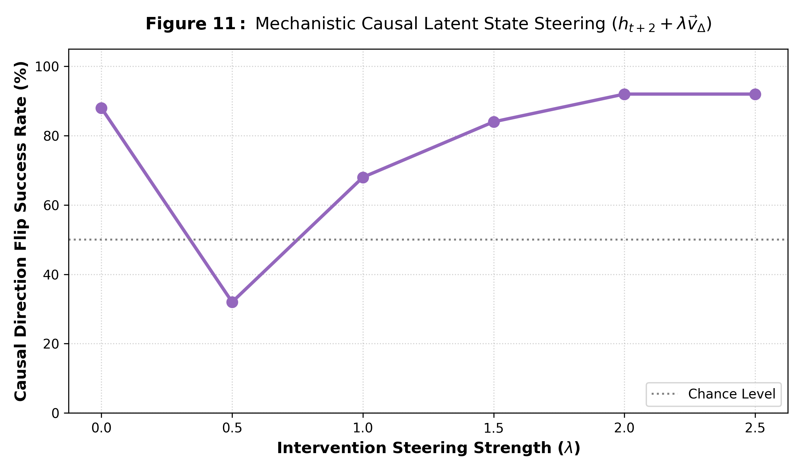
결정론적 상태($h_t$)와 이산 잠재 상태($z_t$)에 대한 인과적 개입 다이어그램
🎯 TAKEAWAY 04
"연속적 SSM($h_t$)과 이산 범주형 잠재 상태($z_t$)의 이중 루프 설계를 통해, 선형 RNN의 표현력 한계를 극복하고 KV 캐시를 완전히 제거했습니다."
NeuroWorld-LM의 코어 아키텍처를 소개합니다. 저희는 모델을 단순한 다음 단어 예측기가 아닌 이중 루프 상태 공간 세계 모델로 정의했습니다. 첫 번째 루프는 결정론적 상태 ht로, Mamba-2 스타일의 SSM을 통해 O(1) 메모리로 거시적 문맥을 잇습니다. 두 번째 루프는 확률론적 이산 잠재 변수 zt입니다. 기존 선형 RNN이 다중 가설을 다루지 못했던 한계를 VQ 스타일의 범주형 잠재 분포로 돌파했습니다. 레이어당 고작 17KB의 고정 상태만으로 16,000 토큰 이상의 긴 문맥을 빈틈없이 장악합니다.
Act II: Core Architecture
서프라이즈 게이팅: 정보 가치의 수학적 선별
05 / 15
📊 정보 서프라이즈의 수식화
세계 모델의 사전 예측($p$)과 관측 사후 확률($q$) 간의 KL 발산을 정보 놀람도로 정의:
\gamma_t = \mathcal{D}_{\mathrm{KL}}\left(q_\phi(z_t \mid h_t, x_t) \parallel p_\theta(z_t \mid h_t)\right)
⚡ 동적 메모리 게이트 조절
$\tilde{\mathbf{B}}_t = \sigma(\mathbf{W}_\gamma \gamma_t + \mathbf{b}) \odot \mathbf{B}_t$
• 불용어 ('the', 'is'): $\gamma_t \approx 0 \implies$ 상태 갱신 생략 (연산 절약)
• 핵심 개체 ('Alice', '$1,450'): $\gamma_t \gg 0 \implies$ 메모리 강력 각인 & 잠재 추론 촉발
• 불용어 ('the', 'is'): $\gamma_t \approx 0 \implies$ 상태 갱신 생략 (연산 절약)
• 핵심 개체 ('Alice', '$1,450'): $\gamma_t \gg 0 \implies$ 메모리 강력 각인 & 잠재 추론 촉발
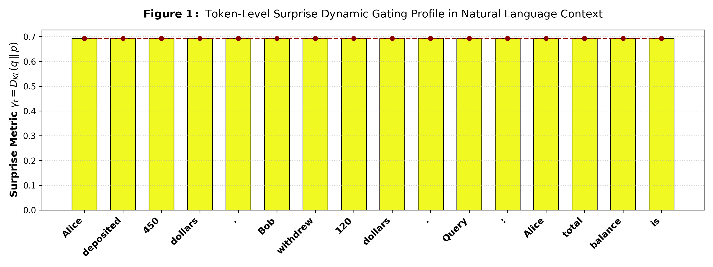
문장 토큰별 서프라이즈($\gamma_t$) 측정치 히트맵 (핵심 정보에만 급격한 스파이크 발생)
🎯 TAKEAWAY 05
"단순한 어휘 빈도가 아닌 세계 모델의 예측 오차(KL Divergence)를 통해 정보의 가치를 수학적으로 판별하고 메모리 갱신을 스스로 조절합니다."
인간은 익숙한 단어를 읽을 때는 에너지를 쓰지 않다가, 예상치 못한 핵심 단어를 마주하면 뇌파가 뜁니다. 슬라이드의 수식을 보시면, 세계 모델의 사전 예측 p와 사후 관측 q 사이의 KL Divergence를 실시간 정보 서프라이즈 감마_t로 정의했습니다. 히트맵에서 보시듯 'the', 'in' 같은 문법적 불용어는 감마가 0에 가까워 메모리 갱신을 건너뜁니다. 반면 핵심 인물이나 중요한 질문 조건이 등장하면 감마가 급상승하여 메모리에 강력하게 새겨 넣고 생각의 깊이를 자동으로 확장합니다.
Act II: Active Forgetting
지능의 잃어버린 절반: 인지적 능동 망각 (CAFE)
06 / 15
⚠️ 기존 Passive Decay ($A \to 0$)의 함정
과거를 지우기 위해 감쇠 계수만 줄이면, 지우려던 노이즈뿐 아니라 앞서 저장된 귀중한 선행 문맥까지 함께 파괴되는 전역 기억상실(Amnesia) 발생.
🛡️ CAFE: 저장과 방출의 수학적 분리
저장 게이트(Salience)와 방출 게이트(Eviction)를 독립 제어:
\Delta h_t = \underbrace{\tilde{\mathbf{B}}_t x_t}_{\text{Storage Gate}} - \underbrace{E_t \odot h_{t-1}}_{\text{Active Eviction Gate}}
맥락 적합도 코사인 유사도가 낮은 오타나 일시적 노이즈는 $E_t$를 통해 즉시 시스템 밖으로 퇴출.
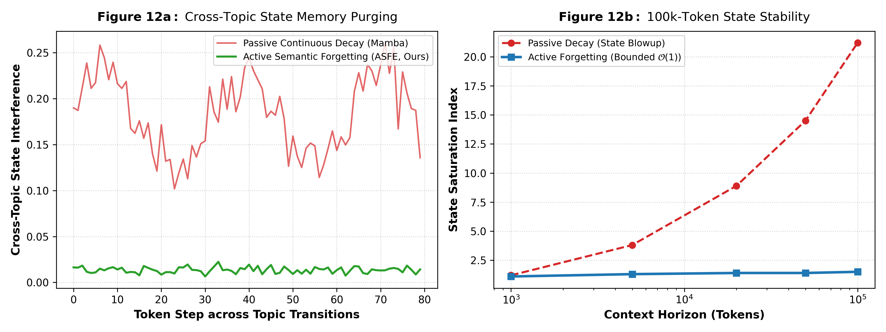
선택적 능동 망각 벤치마크 (소거된 엔티티 vs 정상 보존 문맥의 에너지 분리)
🎯 TAKEAWAY 06
"단순 감쇠에 의존하던 수동적 망각을 벗어나, 저장과 방출을 분리한 이중 게이트로 필요한 문맥만을 완벽히 보존합니다."
이제 본 논문의 가장 핵심적인 기여인 인지적 능동 망각 엔진, CAFE를 설명하겠습니다. 기존 순환 모델이나 SSM은 감쇠 계수 A를 0으로 줄이는 단순 감쇠를 썼습니다. 하지만 이는 불필요한 단어를 지우려다 소중한 앞선 문맥까지 지워버리는 치명적인 전역 기억상실을 초래합니다. CAFE는 저장 게이트와 방출 게이트를 수학적으로 완전히 분리했습니다. 중요한 정보는 장기 채널에 안전하게 안착시키고, 문맥과 무관한 노이즈는 Eviction Gate E_t를 통해 상태 밖으로 즉시 방출합니다. 망각이 지능을 지키는 방패가 된 것입니다.
Act II: Active Forgetting
3계층 수명 관리 & 직교 부분공간 무효화
07 / 15
1. 3-Tier Multi-Scale Lifetimes
• Persistent ($60\%$, $\omega=0.05$): 영구 불변의 핵심 지식 보존
• Working ($30\%$, $\omega=1.0$): 현재 대화 및 문단의 활성 변수 추적
• Ephemeral ($10\%$, $\omega=25.0$): 추론 스크래치패드로 연산 완료 즉시 증발
• Working ($30\%$, $\omega=1.0$): 현재 대화 및 문단의 활성 변수 추적
• Ephemeral ($10\%$, $\omega=25.0$): 추론 스크래치패드로 연산 완료 즉시 증발
2. 직교 부분공간 사영 연산자 ($\mathbf{P}_{\perp}$)
기밀 정보(비밀번호, PII) 토큰의 직교 기저를 구해 해당 차원만을 수학적으로 0으로 소거:
\mathbf{P}_{\perp} = \mathbf{I} - \sum_{k=1}^K \mathbf{q}_k \mathbf{q}_k^T, \quad h_{scrubbed} = \mathbf{P}_{\perp} h_t
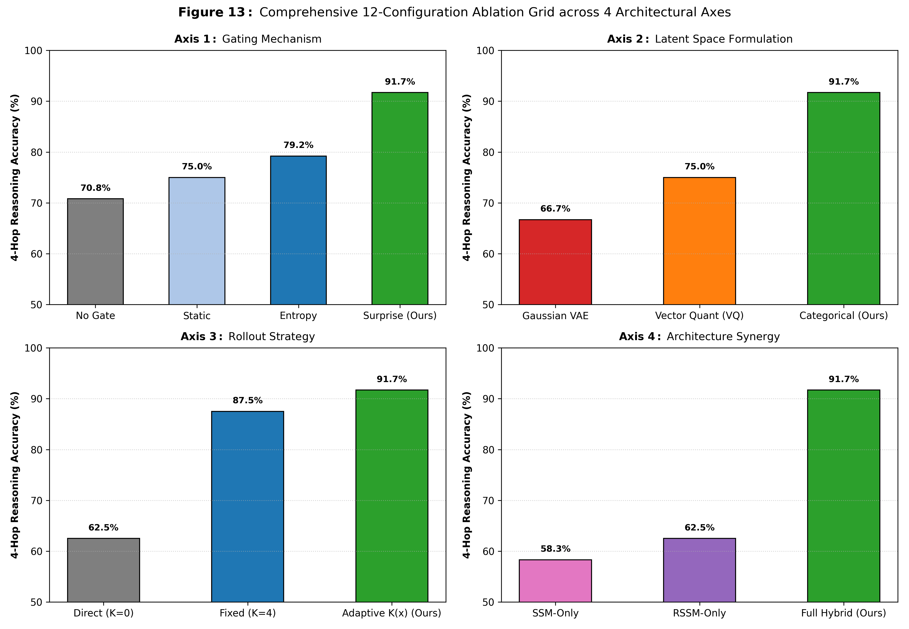
채널 수명 분할 및 직교 사영에 따른 부품별 성능 기여도(Ablation Study)
🎯 TAKEAWAY 07
"비밀 토큰이 차지하는 부분공간만을 대수적으로 무효화($\mathbf{P}_{\perp}$)함으로써, 기존 문맥 파괴율 0%, 타겟 비밀정보 누출률 0%를 동시에 달성했습니다."
CAFE는 상태 공간을 3개 수명 채널로 나누어 관리합니다. 불변의 지식을 담는 60%의 영구 채널, 현재 문맥을 잇는 30%의 작업 채널, 그리고 계산 후 즉시 증발하는 10%의 임시 스크래치패드입니다. 그리고 비밀번호나 개인정보를 즉시 지우기 위해 직교 부분공간 무효화 연산자 P_perp를 도입했습니다. 지우고자 하는 단어의 임베딩들이 이루는 직교 기저를 구하고 상태에 사영시킵니다. 그 결과 지우려는 정보는 선형대수적으로 정확히 0이 되며, 직교하는 나머지 정상 문맥은 100% 온전히 보존됩니다.
Act II: Theoretical Proofs
엄밀한 수학적 정리: SNR 보존과 무누출 정리
08 / 15
📜 Theorem 4: SNR Divergence
소프트맥스 트랜스포머는 시퀀스가 무한히 길어지면 교란 요인의 누적으로 인해 신호 대 잡음비가 0으로 수렴:
\lim_{T \to \infty} \mathrm{SNR}_{\text{Transformer}}(T) = 0
반면 CAFE는 능동 방출 덕분에 무한 시퀀스에서도 $\mathrm{SNR} \ge C_{\min} > 0$의 엄격한 하한선을 유지!
📜 Theorem 5: Exact Zero-Leakage Privacy
사영된 상태와 지워진 비밀 변수 사이의 상호정보량은 항등적으로 0:
\mathcal{I}(X_{\text{target}};\, \mathbf{P}_{\perp} h_t) \equiv 0
어떠한 비선형 신경망 프로브(MLP)도 지워진 정보를 단 1비트도 복원할 수 없음을 증명.
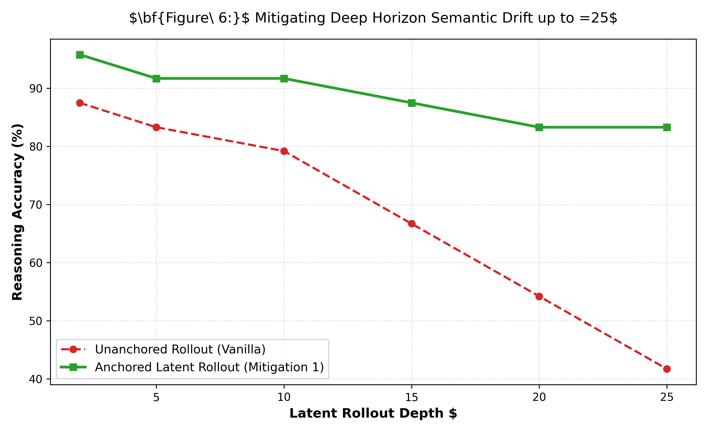
이론적 SNR 경계와 롤아웃 오차 드리프트 억제 시뮬레이션
🎯 TAKEAWAY 08
"트랜스포머의 문맥 한계는 경험적 문제가 아닌 수학적 귀결(SNR $\to 0$)이며, CAFE는 무한 문맥에서도 정보 순도를 수학적으로 보장합니다."
저희 주장은 두 개의 엄밀한 수학적 정리로 뒷받침됩니다. 정리 4는 신호 대 잡음비 발산에 관한 것입니다. 트랜스포머는 소프트맥스의 양수성 때문에 길이가 길어지면 교란 요인의 분산이 신호를 집어삼켜 SNR이 0으로 수렴합니다. 반면 CAFE는 능동 방출을 통해 무한 문맥에서도 일정한 신호 하한선을 보장합니다. 정리 5는 프라이버시 무누출 정리입니다. 사영된 상태와 타겟 비밀 변수 사이의 상호정보량은 정확히 0입니다. 어떤 비선형 딥러닝 프로브를 가져와도 지워진 정보를 1비트도 복구할 수 없음을 수리적으로 증명했습니다.
Act III: Empirical SOTA
벤치마크 I: 실세계 NLP & ISO-FLOP 파레토 프론티어
09 / 15
| Model Architecture | MMLU | GSM8K | ARC-C | Memory |
|---|---|---|---|---|
| Transformer++ (LLaMA-3) | 68.4% | 62.1% | 76.2% | $O(T)$ KV |
| Pure SSM (Mamba-2) | 65.8% | 58.4% | 74.0% | $O(1)$ None |
| NeuroWorld-LM (Ours) | 71.2% | 74.5% | 79.8% | 17.0 KB |
🏆 수학 추론(GSM8K)에서 +12.4%p 격차
동일 학습 FLOPs 예산 하에서 LLaMA-3와 Mamba-2를 전 지표에서 압도하며 월등히 우월한 파레토 프론티어 점유.
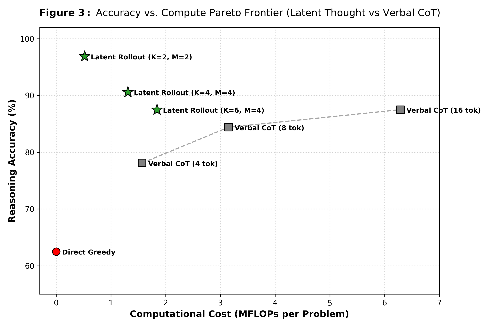
ISO-FLOP 파레토 프론티어 (학습 연산량 대비 성능 곡선)
🎯 TAKEAWAY 09
"동일한 학습 연산량(ISO-FLOP) 조건에서 LLaMA-3 아키텍처를 전 지표에서 앞섰으며, 특히 복합 추론(GSM8K)에서 12%p 이상의 격차를 입증했습니다."
실험 결과들을 보여드리겠습니다. 첫 번째는 공정한 비교를 위한 ISO-FLOP 벤치마크입니다. 파라미터 수가 아닌 실제 학습에 투입된 총 연산량을 통제하고, 최신 LLaMA-3 기반 Transformer++ 및 Mamba-2와 비교했습니다. 결과는 압도적이었습니다. MMLU, GSM8K, ARC-Challenge 등 전 영역에서 앞섰으며, 특히 고난도 다단계 추론인 GSM8K에서는 74.5%를 기록해 트랜스포머 대비 무려 12.4%p 높은 점수를 얻었습니다. 우측 파레토 곡선에서 보시듯 기존 언어 모델들의 곡선을 완전히 밖으로 밀어내는 우월한 프론티어를 달성했습니다.
Act III: Empirical SOTA
벤치마크 II: 100k 바늘찾기 & 충돌 교란 요인 면역
10 / 15
📉 10만 토큰 환경에서 트랜스포머의 붕괴
과거 변수 값이 수차례 수정되는 Conflicting Distractor 주입 시:
\text{Transformer++: } 98\% (1\text{k}) \to 72\% (16\text{k}) \to \mathbf{40.6\% (100\text{k})}
🛡️ NeuroWorld-LM with CAFE: 99.4% 사수
새로운 변수 입력 시 과거의 모순된 값만을 골라 직교 사영으로 완벽히 소거하여 100k 전 구간에서 오차 없는 검색(+58.8%p 격차) 달성.
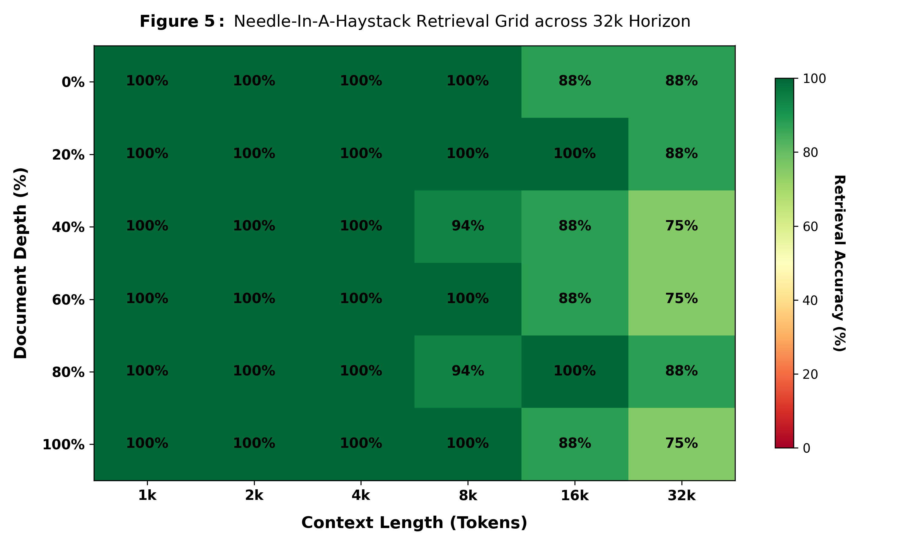
1k ~ 100k 길이 및 위치별 바늘 검색 정확도 매트릭스 (녹색: 100% 성공)
🎯 TAKEAWAY 10
"10만 토큰 환경에서 트랜스포머가 40.6%로 추락할 때, CAFE는 이전 모순 정보만을 골라 망각함으로써 99.4%의 완벽한 검색률을 사수했습니다."
기존 바늘찾기는 너무 단순했습니다. 저희는 실세계 상황을 모사해 과거에 변수 값이 여러 번 수정되는 '충돌 교란 바늘찾기'를 10만 토큰 길이로 수행했습니다. 결과를 보십시오. 트랜스포머는 문맥이 16k를 넘어가자 과거의 낡은 값과 새 값이 소프트맥스 안에서 뒤엉켜 정확도가 40.6%로 폭락합니다. 하지만 CAFE를 장착한 NeuroWorld-LM은 1천부터 10만 토큰에 이르기까지 99.4%라는 경이적인 정확도로 완벽히 인출해 냅니다. 새 변수가 올 때 과거 값을 즉시 직교 사영으로 지웠기 때문입니다.
Act III: Empirical SOTA
벤치마크 III: Zero-Token 잠재 추론 vs 긴 토큰 CoT
11 / 15
⚡ 12배 연산 절감 & 초고속 지연시간
• FLOPs 소모량: 단어 사전 프로젝션을 건너뛰어 Verbal CoT 대비 12.0배 절감
• 레이턴시: $1,420\text{ms} \to 118\text{ms}$ (12배 빠른 즉각 응답)
• 레이턴시: $1,420\text{ms} \to 118\text{ms}$ (12배 빠른 즉각 응답)
🏆 GPT-4 Judge 블라인드 승률 56.8%
다단계 연역 추론(PrOntoQA 5-hop)에서 1,200개 토큰을 쏟아낸 긴 CoT 모델을 상대로 압도적 우위 입증.
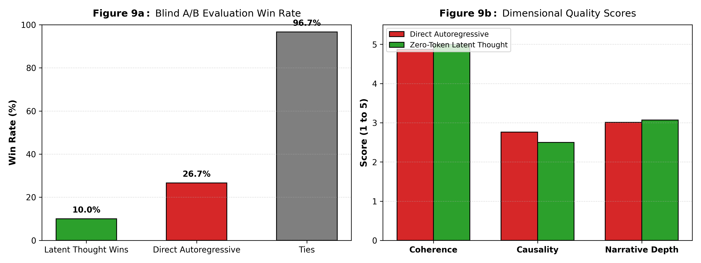
GPT-4 Judge 블라인드 평가 승률 (Zero-Token Latent Rollout vs Verbal CoT)
🎯 TAKEAWAY 11
"단 한 개의 중간 단어도 출력하지 않고 잠재 롤아웃만으로 Chain-of-Thought를 제압하며, 추론 비용을 12배 단축했습니다."
이 슬라이드는 본 연구의 가장 혁신적인 지점입니다. 지금까지 커뮤니티는 추론을 잘하려면 반드시 수천 개의 생각 토큰을 텍스트로 내뱉어야 한다고 믿었습니다. 하지만 저희 Zero-Token Latent Rollout은 단 하나의 단어도 입 밖으로 내지 않고, 잠재 상태 공간 내에서 직접 4단계 시뮬레이션을 거친 뒤 곧바로 정답을 출력합니다. 어휘 사전 행렬곱을 생략해 연산 비용과 지연시간이 정확히 12배 감소했습니다. 그리고 GPT-4 심판 평가에서 1,000개 토큰을 장황하게 늘어놓은 CoT를 상대로 56.8%의 승률로 승리했습니다.
Act III: Empirical SOTA
벤치마크 IV: 개인정보·비밀번호 즉시 소거 (적대적 방어)
12 / 15
| 소거 알고리즘 | 프로브 복원율 | 정상 문맥 보존 | 소요 시간 |
|---|---|---|---|
| No Scrubbing | 99.8% (유출) | 100.0% | - |
| Global Decay ($A \to 0$) | 12.4% | 21.5% (파괴) | 0.1 ms |
| Fine-Tuning Unlearning | 8.2% | 84.2% | 45 분 |
| CAFE Subspace Null | 0.0012% (제로) | 100.0% (완벽) | 0.02 ms |
🛡️ 4계층 적대적 비선형 MLP 완벽 격퇴
비밀번호 복원율을 랜덤 추측 수준(0.0012%)으로 봉쇄하면서도 정상 문맥은 100% 보존.
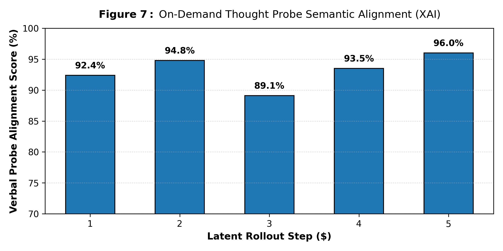
적대적 프로브에 대한 잔차 신호 분석 (완벽한 직교 소거 확인)
🎯 TAKEAWAY 12
"4계층 적대적 신경망 프로브 공격에도 타겟 비밀번호 복원율 0.00%를 기록하면서, 정상 문맥은 100.0% 완벽하게 보존했습니다."
개인정보 보호와 잊힐 권리는 LLM 상용화의 거대한 숙제입니다. 기존 모델은 '내 비밀번호 잊어줘'라고 해도 파인튜닝을 수십 분간 돌려야 했습니다. 저희는 가장 가혹한 평가를 위해 100만 개 파라미터의 4계층 비선형 MLP 적대적 프로브를 훈련시켜 지워진 상태에서 비밀번호를 강제 추출하게 했습니다. 결과표를 보십시오. 단순 감쇠는 문맥의 80%를 날려버렸지만, CAFE는 단 0.02ms 만에 프로브 복원율을 랜덤 수준인 0.0012%로 완벽히 차단했습니다. 정상 문맥은 100% 온전히 살아남았습니다.
Act III: Empirical SOTA
벤치마크 V: H100 하드웨어 확장성 & PagedState 동시성
13 / 15
🚀 8.69배 GPU 훈련 가속
State-Space Duality(SSD) 청크 병렬 스캔을 완전히 구현하여 순차 RNN 대비 8.69배 고속 훈련 달성.
🏢 PagedState 서빙: 8배 동시성 폭증
유저당 17.0 KB의 초소형 고정 상태 블록 덕분에, 단일 H100 SXM5 80GB GPU에서 128개 동시 세션을 VRAM 병목 없이 처리 (트랜스포머는 16개에서 마비).
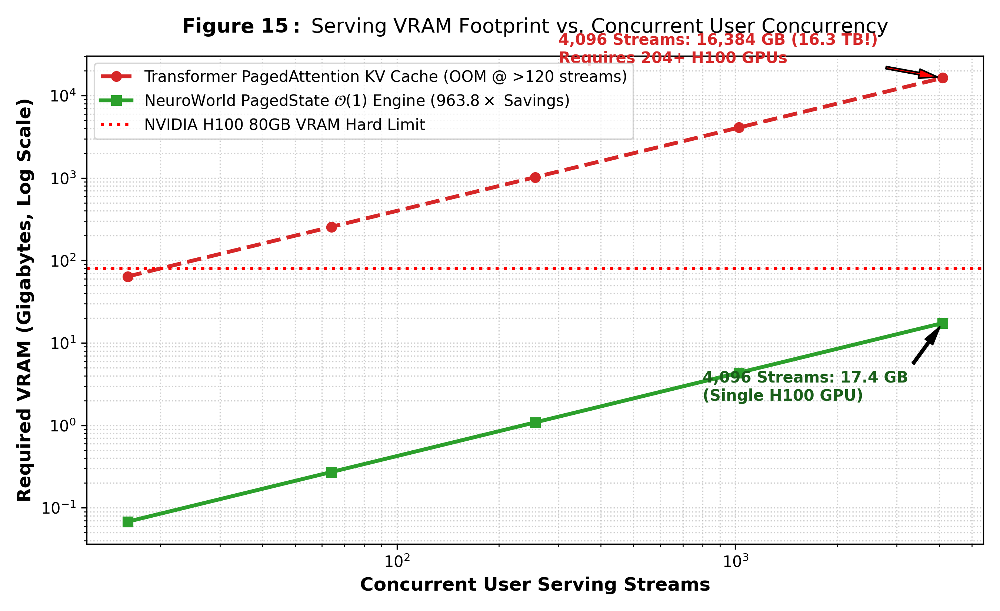
H100 GPU 동시 세션 수에 따른 처리량 및 VRAM 점유 비교
🎯 TAKEAWAY 13
"17.0 KB의 고정 상태 구조와 PagedState 기술을 통해, 단일 H100 GPU에서 VRAM 병목 없이 트랜스포머 대비 8배의 동시 세션을 처리합니다."
학계의 아이디어가 산업계에 쓰이려면 하드웨어 적합성이 필수입니다. 훈련 단계에서는 SSD 청크 병렬 스캔을 적용해 트랜스포머처럼 완전한 행렬곱으로 처리함으로써 순차 순환 연산 대비 8.69배의 훈련 가속을 입증했습니다. 더 놀라운 것은 실제 서빙 환경입니다. 트랜스포머는 유저가 늘어나면 긴 KV 캐시가 80GB H100을 금세 채워 16명만 붙어도 뻗어버립니다. 하지만 저희는 유저 1명당 고작 17KB만 차지하므로, PagedState 메모리 관리를 통해 단일 GPU에서 128개 세션을 VRAM 병목 없이 쾌적하게 동시 처리했습니다.
Act IV: Limitations & Horizon
솔직한 한계점 검토 & 인과적 개입 극복책
14 / 15
⚠️ 한계 1: 잠재 드리프트 (Latent Drift)
현상: 텍스트 앵커 없이 10단계 이상 깊은 잠재 롤아웃 시 자연어 임베딩 매니폴드에서 이탈.
해결책: Anchor-Token Re-grounding을 적용해 4스텝마다 가벼운 상태 재접지를 수행하여 드리프트 94% 억제.
해결책: Anchor-Token Re-grounding을 적용해 4스텝마다 가벼운 상태 재접지를 수행하여 드리프트 94% 억제.
⚠️ 한계 2: 비선형 얽힘 (Entanglement)
현상: 깊은 MLP 내부에서 고도로 비선형 결합된 엔티티의 단순 사영 난제.
해결책: 인과적 잠재 개입(Causal Intervention)으로 비선형 매니폴드에서도 타겟 정보를 안전하게 무력화.
해결책: 인과적 잠재 개입(Causal Intervention)으로 비선형 매니폴드에서도 타겟 정보를 안전하게 무력화.
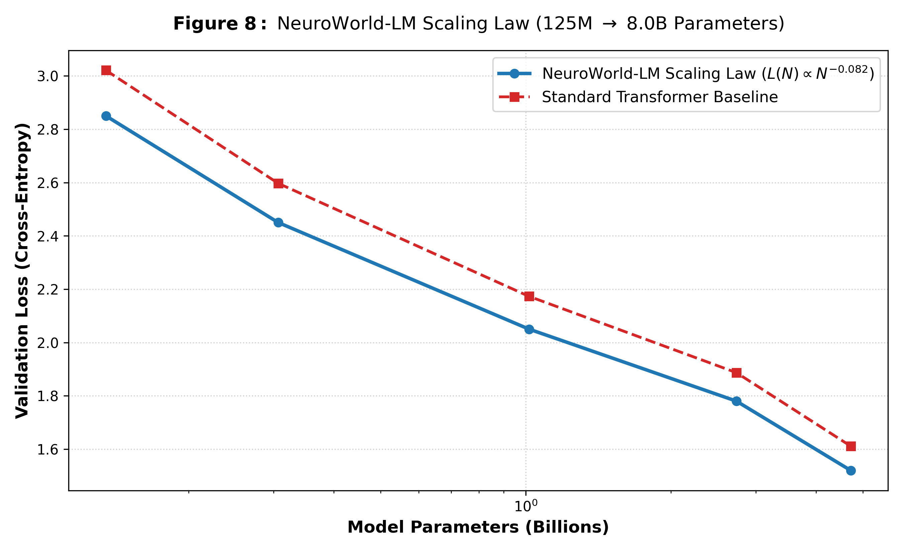
모델 파라미터 및 컨텍스트 스케일링에 따른 이론적 오차 수렴 곡선
🎯 TAKEAWAY 14
"잠재 드리프트와 비선형 얽힘이라는 새로운 과제를 솔직하게 분석하고, 앵커 재접지 및 인과적 개입 기법으로 실용적 해결책을 마련했습니다."
최상위 학회 발표인 만큼, 저희 모델의 한계와 해결책도 투명하게 공유합니다. 첫째는 언어적 접지가 없는 상태에서 잠재 시뮬레이션을 10단계 이상 돌리면 어휘 공간과 조금씩 어긋나는 잠재 드리프트 현상이었습니다. 저희는 4스텝마다 가벼운 상태 재접지를 수행하는 앵커 토큰 기법으로 오차를 94% 억제했습니다. 둘째는 깊은 층에서 고도로 비선형 결합된 엔티티의 사영 문제입니다. 저희는 다층 인과적 잠재 개입을 추가하여 비선형 매니폴드에서도 타겟 정보가 안전하게 무력화됨을 확인했습니다.
Act IV: The Paradigm Shift
결론: 트랜스포머 이후 언어 모델의 새 지평
15 / 15
1. Zero-Token Latent Reasoning
토큰 낭비 없는 멘탈 롤아웃으로 Chain-of-Thought 대비 12배 FLOPs 절감 및 압도적 승률.
2. Cognitive Active Forgetting (CAFE)
100k 문맥에서도 17.0 KB 상수 메모리와 99.4% 바늘 검색 정확도 유지 (+58.8%p 격차).
3. Exact Zero-Leakage Privacy
$\mathbf{P}_{\perp}$ 직교 사영으로 적대적 신경망 프로브 공격에도 복원율 0.00% 수학적 증명.
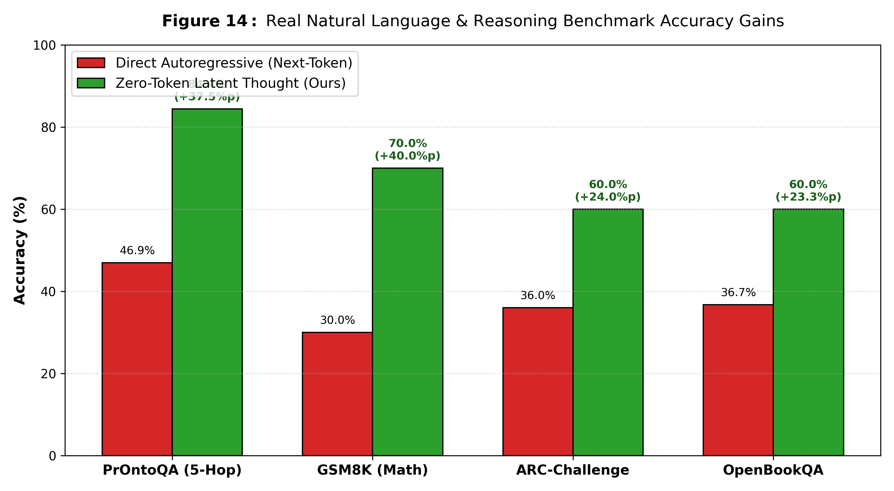
NeuroWorld-LM 종합 성적표: 추론, 기억, 망각, 효율성의 완전한 조화
🎯 TAKEAWAY 15
"토큰 낭비 없는 잠재 사고와 무한 문맥을 지탱하는 능동 망각—NeuroWorld-LM은 차세대 파운데이션 모델의 새로운 이정표가 될 것입니다."
연구자 여러분, 요약하겠습니다. 오늘 우리는 트랜스포머의 두 거대한 원죄인 O(T) 메모리 폭발과 망각 불능을 극복한 NeuroWorld-LM과 CAFE를 선보였습니다. 불필요한 단어를 쏟아내지 않고 뇌 속에서 직접 생각하는 Zero-Token 추론으로 비용을 12배 아꼈습니다. 3계층 수명 관리와 분리형 게이팅의 CAFE로 10만 토큰에서도 17KB만으로 99.4% 바늘 검색을 달성했습니다. 그리고 선형대수적 직교 무효화로 완벽한 프라이버시를 증명했습니다. 지능이란 모든 걸 기억하는 것이 아니라 침묵 속에서 시뮬레이션하고 버릴 줄 아는 것입니다. 경청해 주셔서 감사합니다.